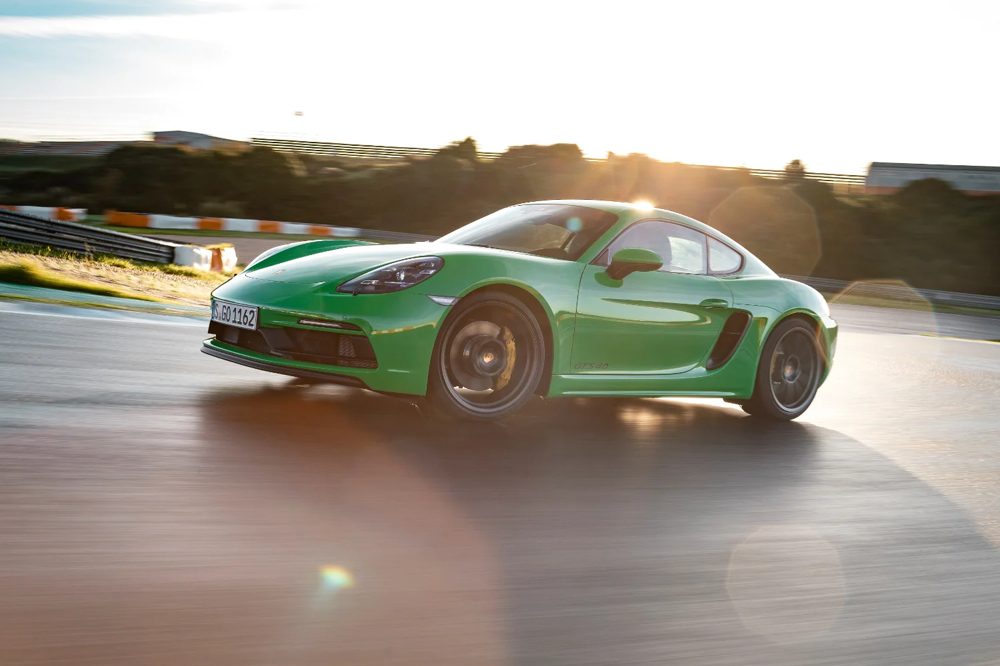

Born from Racing
The "718" moniker isn't just a marketing tag. It is an homage to the lightweight mid-engine race cars that dominated Targa Florio and Le Mans in the 1950s and 60s.
The Original 718 RSK
Born as the successor to the legendary 550 Spyder, the original 718 was built exclusively for the racetrack. The 718 made its racing debut at the 1957 24 Hours of Le Mans but was unfortunately forced to retire due to an accident. It featured a light, tubular spaceframe and a mid-mounted flat-four engine, it prioritized power-to-weight ratio and nimble handling over raw, straight-line speed.

The Cayman Reborn
After decades, the mid-engine sports coupe returned in the form of the Cayman (Type 987). Slotted perfectly between the Boxster roadster and the iconic 911, it offered sports car purists unprecedented chassis rigidity and near-flawless weight distribution.

The 718 Cayman
Porsche officially unified the Cayman and Boxster lineup under the 718 banner (Type 982), introducing turbocharged flat-four engines. This engineering shift directly mirrored the legendary 1950s racer's heart—fusing high efficiency with explosive low-end torque.
